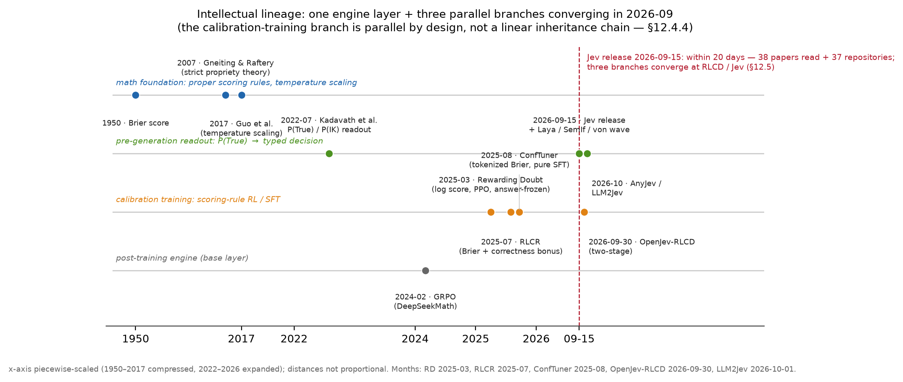
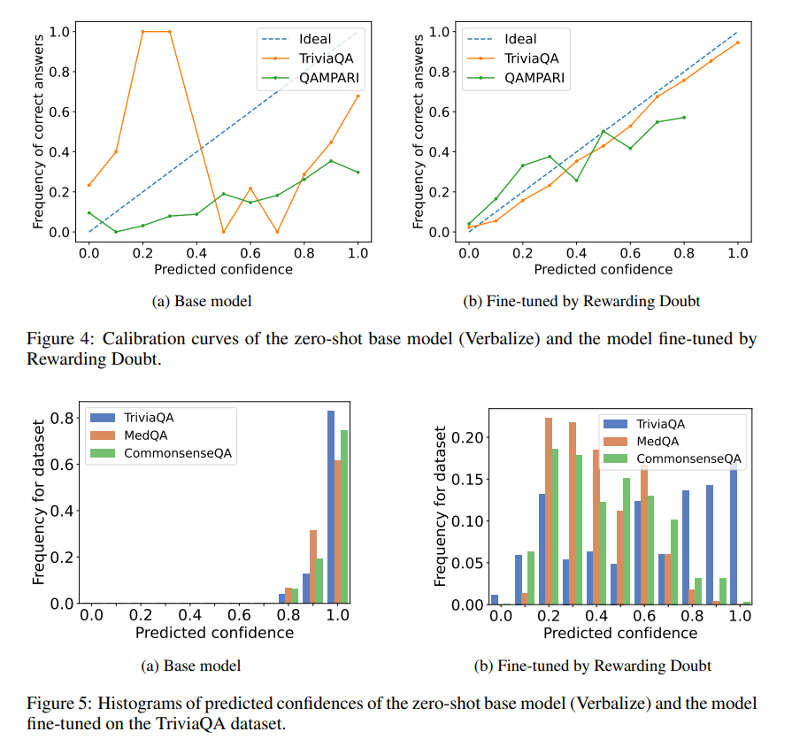
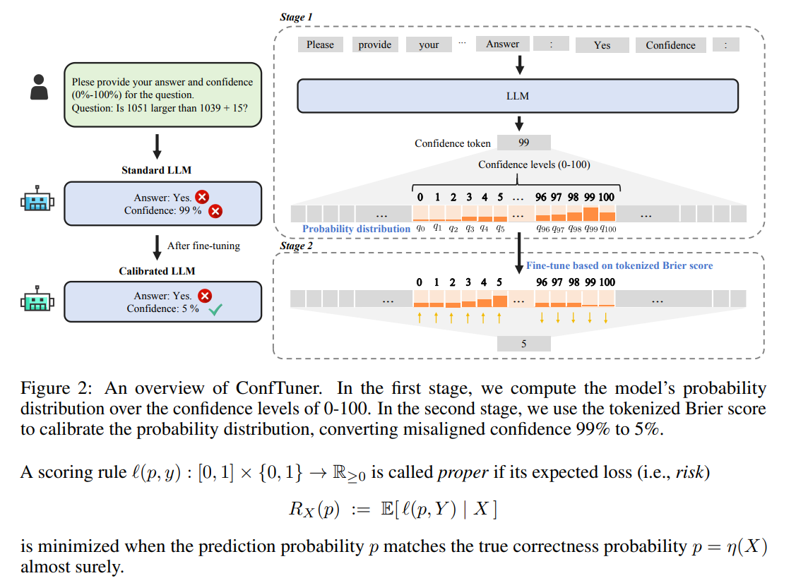

System-1 决策模型 “读取 logits、输出校准概率、不生成文本” 的技术范式，并非单一线性演进的结果，而是 “一个后训练引擎底座 + 三条并行支线” 在 RLCD/Jev 处的汇流形成的技术体系。
本章基于实证结果重构其技术谱系，梳理各条技术路线的独立发展与最终汇流过程。
先看一个时间线概览，看清"底座"与"三支线"在时间上如何错开的：
| 时间 | 事件 | 所属线 |
|---|---|---|
| 1950 / 2007 | Brier 评分 / 严格适当性理论 | 支线一（数学） |
| 2017 | Guo 温度缩放 | 支线一（数学） |
| 2022-07 | Kadavath P (True)/P (IK) 读出 | 支线二（读出） |
| 2024-02 | GRPO 去 value net | 底座（后训练引擎） |
| 2025-03 | Rewarding Doubt：log score 作 RL 奖励 | 支线三（校准训练） |
| 2025-07 | RLCR：Brier+correctness，改造 GRPO | 支线三（与 RD 并行） |
| 2025-08 | ConfTuner：tokenized Brier 作 SFT 损失 | 支线三（SFT 平行路线） |
| 2026-09 | Jev 发布（官方 RLCD）+ Laya/SemIf 复现潮 | 三线汇流 |
| 2026-10 | LLM2Jev / OpenJev-RLCD | 支线二 / 三工程化 |
可以看到：数学地基比读出早 70 年、比校准训练早 75 年，三条线在 2025 年之前几乎没有交集。如下为思想谱系示意图。

11.1、核心底座：可验证奖励后训练引擎 GRPO
DeepSeekMath 于2024年2月提出的 GRPO（Group Relative Policy Optimization）（arXiv:2402.03300）本身不是校准工作，也不是决策模型工作，而是将可验证奖励强化学习（RLVR）工程化的标准引擎。其对本主题的价值是底座级的，是后续所有开源校准强化学习的工程基础。
核心机制与工程价值
GRPO 的核心创新是通过组内相对优势归一化去除了价值网络，将 PPO
所需的四个模型（策略 + 参考 + 奖励 + 价值）压缩为三个模型，使 7B
级模型的强化学习可在单卡级资源上运行。其核心设计包括：对同一问题采样 64
个输出，用组内奖励的均值作为基线，通过(奖励-均值)/标准差做优势归一化，将
KL 正则直接加入损失函数。
对校准领域的预见性结论是：GRPO 原文实测强化学习后，Pass@K（前 K 个答案包含正确答案的概率）不变，但 Maj@K（多数投票准确率）显著上升，证明强化学习的核心作用是收窄采样分布，而非扩展模型的能力上限。这一观察为后续 “强化学习导致过度自信” 的现象提供了早期机制解释 —— 分布收窄会将概率质量挤向众数，即便众数并非始终正确。
后续的 RLCR 【2507.16806】等校准强化学习工作均以 GRPO 为底座进行改造，替换奖励函数的设计，同时保留组内相对优势、去除价值网络的核心框架。RLCR 进一步将采样数从 64 降至 32，并按 Open-Reasoner-Zero 路线去除了 KL 正则与监督微调冷启动，持续对底座引擎进行修剪优化，但核心骨架保持不变。
PPO 与 GRPO 的核心设计对比如下：
| 维度 | PPO | GRPO |
|---|---|---|
| 基线方式 | 训练价值网络做广义优势估计 | 组内采样奖励的均值 |
| 优势归一化 | 广义优势估计 | 组内(奖励-均值)/标准差 |
| KL 正则位置 | 加入奖励项 | 直接加入损失函数 |
| 所需模型 | 策略 + 参考 + 奖励 + 价值（4 个） | 策略 + 参考 + 奖励（3 个，无价值网络） |
定位：GRPO 是基础引擎，是后续三条支线发展的基础
以 RLHF（Reinforcement Learning from Human Feedback，基于人类反馈的强化学习）→RLVR→GRPO（Group Relative Policy Optimization，组相对策略优化）→官方 RLCD 为节点的技术演进序列，构成了该体系下后训练阶段的核心范式主线，形成了可复用的算法底座与标准化训练流程。在GRPO基础引擎之上，现有研究分别沿数学推理能力增强、知识读出机制优化、模型校准性能提升三条技术支线展开拓展，通过引入专项训练目标与约束机制，对基础后训练范式实现定向增益；
RLHF 作为该演化链路中更上游的奠基性范式，其核心优化目标锚定人类偏好对齐，原始设计与模型校准目标并无直接关联。然而 Kadavath 等人的工作揭示了该技术路径下衍生的关键问题：模型经 RLHF 训练后会出现校准坍缩（calibration collapse）现象 —— 输出置信度与真实准确率的匹配程度发生显著退化；而通过将推理温度参数设定为T=2.5，可在一定程度上逆转该退化、恢复模型的校准表现。这一发现也为后续校准支线的后训练技术迭代提供了核心问题驱动与研究起点。
11.2、支线一：数学地基线 —— 严格适当评分规则与温度缩放
该支线为纯理论脉络，不涉及具体模型实现，但定义了所有校准技术的核心约束与评价标准。、
严格适当评分规则理论
1950 年提出的 Brier 评分，与 2007 年完善的严格适当性（strictly proper）理论，构成了全部校准奖励设计的数学基础。严格适当性的核心性质是：当且仅当模型报告真实的主观概率时，期望奖励达到最大值。线性评分规则因鼓励极端概率不具备适当性，无法激励模型诚实报告置信度；只有适当评分规则能让 “报告真实概率” 成为唯一最优策略。
Brier 评分的形式为预测概率与真实标签的平方误差\(Brier=(q−c)^2\)，可同时惩罚 “答错” 与 “过度自信”，将准确率与校准纳入同一标量优化目标，是后续校准训练最常用的评分规则。
温度缩放后处理
2017 年 Guo 等人的研究证明，现代深度神经网络普遍存在系统性过度自信，并提出温度缩放这一单参数后处理方法：在留出集上拟合温度参数，最小化负对数似然，实现校准优化。
温度缩放的核心性质是仅调整分布形状、不改变最优选项排序，因此不会降低模型的判别准确率，同时也决定了其无法修复判别力本身的缺陷。这一性质定义了后处理校准的适用边界，也解释了为何判别训练始终需要配套校准工序。
从评估工具到训练目标的范式转变
2025 年之前，评分规则始终作为概率预测的事后评估工具；2025 年后，其被反向用作强化学习奖励与监督微调损失，实现了用途的范式转变。其中一个关键的工程筛选原则是有界性：对数评分虽具备适当性，但概率趋近于 0 时无界，与正确性奖励共存时容易出现奖励破解问题，因此工程落地中更倾向于选择有界的 Brier 评分。
定位：
- 这条线的贡献是跨支线共享的，后续的三个 RL/SFT 工作（RD、RLCR、ConfTuner）的奖励/损失都必须满足严格适当性；区别只在于将其纳入优化循环的哪一环（RL 奖励 vs SFT 损失 vs 事后单标量）。
11.3、支线二：预生成决策读出线 —— P (True) 到 typed decision
该支线回答了 “能否不生成完整答案，直接从模型隐表示中提取置信信号” 的问题，是 Jev 式 “读 logits 不生成文本” 范式的学术源头。
奠基性工作：Kadavath 的读出范式
2022 年 Anthropic 的研究【2207.05221】首次系统验证了从预训练模型中读出置信信号的可行性，两个核心设计直接预言了后续的读出协议：
P (True) 读出协议：将开放式自评改写为 True/False 二选一形式，读取选项 token 的概率作为置信度。研究证实，模型对单 token 选项的打分天然具备一定校准性，自由生成文本再判对错会因释义歧义降低准确性，这是后续字母读出路线【SemIf/AnyJev等】的最早实证依据。
P (IK) 价值头：在语言模型上附加二分类头，读取最后一个 token 的 logit，训练目标为 “预测本题是否能答对”。仅在单一数据集上训练的价值头，即可跨任务区分对错，OOD 任务上 AUROC 普遍高于 0.6，部分任务可达 0.9 以上【2207.05221，Table 1】。
该研究同时留下了两个延续至今的关键观察：
一是排序能力（AUROC）不等于数值校准（ECE），有置信信号不代表概率数值准确；
二是强化学习后模型校准会严重退化，但统一的温度缩放即可恢复校准，这是 “RL 伤校准、温度可救” 【arXiv:2207.05221 Fig.9】的最早系统证据。
从零样本读出到产品化
Kadavath 的工作属于 “生成后自评” 模式，后续开源工作将其前置为 “生成前决策” 模式：冻结基座模型，将问题改写为单字母作答形式，在首个 token 位置读取选项的 softmax 概率，零训练即可达到较高准确率【SemIf】。后续研究进一步通过选项旋转去位置偏置、闭式读出头设计、前缀自由数字编号等方式，优化读出的公平性与选项数量上限【AnyJev，arXiv:2610.00831】。
官方产品则将读出技术产品化为声明式的 Choice/Score/Noul 三类原语，支持并行独立求值、按选项基数两阶段打分，形成了成熟的类型化决策接口。
定位：
这条线的内在逻辑：Kadavath 证明了"校准信号存在于模型内部、可被读出"，而开源社区则证明"读出不需要训练就能拿到不错的准确率"。在商业产品侧 Jev 则把"读出"做成一等公民的产品接口。
它与支线三（把校准训练进模型）是互补的：一个走读出，一个走训练。
11.4、支线三：校准训练线（RD / RLCR / ConfTuner）—— 并行探索而非线性继承
将适当评分规则转化为训练目标的三类代表性工作，几乎并行出现、相互独立，是并列对照关系而非师徒继承关系，这也是对既往理解的线性谱系认识的核心修正。
Rewarding Doubt：最早的评分规则 RL 校准
2025 年 3 月 TUM 与 MCML 提出的 Rewarding Doubt，是首个将严格适当评分规则用作强化学习奖励的公开工作【2503.02623】。其核心设计包括：采用语言化置信度作为信号形式，使用 PPO 优化，选择二元对数评分规则作为奖励函数。
该工作采用两阶段解耦设计：先采样并冻结答案，PPO 梯度仅流过置信度 token，从结构上保证校准训练不改变模型的答案能力。其代价是答案能力完全依赖基座模型，强化学习不参与答案质量提升【仅校准不提升准确率】。该研究同时验证了校准训练的跨任务泛化性：仅在单一数据集上训练，即可在多个分布外数据集上降低 ECE、提升 AUROC。
说明：
- 因为它只优化校准项、没有准确性提升的收益。这避开了 RLCR 后来证明的"无界评分规则 + 准确性收益会产生奖励劫持"问题，但代价就是答案能力完全靠基座模型，RL 不参与提升答案。

RLCR：有界 Brier 奖励的联合训练
同时，稍晚由 MIT 于2025 年 7 月提出的 RLCR【2507.16806】，与 Rewarding Doubt 相互独立，二者沿不同技术路径探索大模型后训练校准方案。RLCR 采用有界二元 Brier 评分作为校准奖励项，同时保留正确性激励，基于改造后的 GRPO 引擎实现优化。
方案设计上，RLCR 的训练信号由“答案 +
显式置信度表述”共同构成，模型输出中设置专门的<analysis>不确定性推理段落承载置信度推理过程；其奖励函数的精确形式为：\(R = \mathbb{1}[y\equiv y^*] -
(q-\mathbb{1})^2\)，其中\(\mathbb{1}[y\equiv
y^*]\)为答案正确性指示项（正确性奖励），\((q-\mathbb{1})^2\)为二元 Brier
评分惩罚项，整体构成有界奖励空间。
RLCR 明确批评了仅优化校准项的设计，具体包括 Rewarding Doubt、Sayself 以及 Xu 等人（2024）的工作，指出单一校准目标会无意中损害任务准确率，尤其在大模型场景下易引发奖励破解（reward hacking）问题。该工作通过定理 1 证明：在有界评分规则下，任务准确率与校准度可在同一点同时达到全局最优，为 “正确性奖励 + 校准奖励” 的联合优化提供了理论保障。这一结论与 Rewarding Doubt 形成核心机制分歧：RD 通过完全移除正确性奖励，绕开了无界评分下的奖励破解问题；而 RLCR 则证明，若算法设计中需要保留正确性激励，则必须更换为有界评分规则。
实验显示，在 HotpotQA 数据集上 RLCR 将模型 ECE 从 RLVR 基线的 0.37 降至 0.03，同时准确率仅下降 0.9 个百分点，实现了校准性能大幅提升且任务性能损耗极小的效果。另外针对对数评分方案的机制性缺陷，RLCR 从理论上证明：无界的对数评分规则与有限正确性奖励共存时，必然存在奖励破解空间；对应的简化验证（toy）实验结果显示，采用对数评分的 RLCR-Log 版本策略完全坍缩至弃权状态（准确率 = 0、Brier 得分 = 0、ECE=0），而采用 Brier 评分的 RLCR-Brier 版本可维持 34.4% 的准确率与 0.02 的 ECE，从实证层面验证了有界评分的必要性（原论文附录 E）。这一结论与 Rewarding Doubt 的设计形成核心分歧：后者通过不加正确性奖励绕开了该问题，前者则证明一旦需要正确性激励，就必须更换有界评分规则。
另外，RLCR
一项易被忽略的核心结论是：校准性能的核心决定因素是奖励函数设计，而非引导模型反思的提示话术。实验显示，即使移除<analysis>不确定性推理段落，RLCR
仍可达到 0.09 的 ECE；反之，RLVR 基线即使增加不确定性推理段落，ECE
也仅能达到 0.34（原论文 Table 2）。该发现反向支撑了
“无需依赖思维链反思、仅通过奖励设计即可实现校准”
的技术路线，为无推理文本、单次前向的校准方案提供了实证依据。
ConfTuner：监督微调范式下的恰当评分规则校准路线
几乎同时，NUS 于 2025 年 8 月提出的 ConfTuner【2508.18847】，实现了置信校准领域的关键范式转折：它首次将经典的恰当评分规则（Proper Scoring Rule）从强化学习的奖励信号，转化为可直接反向传播的监督微调（SFT）损失函数，与 RL 类校准路线形成理论同源、路径平行的技术谱系。。
在此之前，基于监督微调的置信校准方法普遍依赖启发式代理置信标签 —— 例如通过多采样一致性、类别级统计准确率或模型自我判断生成置信目标，不仅缺乏严格的校准理论保证，还存在假设过强、噪声高、计算成本大等问题。ConfTuner 跳出了“先构造置信标签再监督拟合”的传统思路，直接将置信表达空间离散为预定义的 token 集合（如 0~100 的百分级置信 token），在置信位置的 token 概率分布上定义分词化 Brier 分数（Tokenized Brier Score） 作为损失函数，并通过定理严格证明该损失仍满足恰当评分规则性质 —— 即损失最小化的全局最优解，对应模型输出的置信度与样本真实正确率完全对齐。
【细节扩展】
目标：就是让模型在输出末尾的
Confidence: XX%文本时，XX 这个数值能真实反映答案的正确率，解决 “答错还高度自信” 的过度自信问题；训练是端到端的，核心在于使用 Tokenized Brier Score 损失来优化置信度位置Token的概率分布，驱动置信 token 的概率分布，去贴近 “这道题模型真实能答对的概率” ：

步骤 1（取分布）：模型正常生成 “答案 + 置信文本”，在置信数字对应的 token 位置，取出所有候选置信 token（0~100）的概率分布 \(\boldsymbol q\)；
步骤 2（算损失回传）：用这个分布 \(\boldsymbol q\) 和“答案是否正确”的二元标签 y，计算 Tokenized Brier Score 损失，直接反向传播更新模型参数；
引入 Tokenized Brier Score 损失后，丢弃了“给每个样本标一个置信度 “标准答案”，让模型去拟合这个标签”的传统监督式校准思路，仅使用二元标签，依靠恰当性评分规则的内在机制来驱动校准：只要模型想让损失最小，就必须诚实地输出真实置信；故意高估、低估、乱报极端值，长期平均损失都会变大。
\(\ell(\boldsymbol q,y):=\sum_{i=0}^{N} q_i\left(y-\frac{i}{N}\right)^2\)
核心假设：置信度是离散 token 集合 \(T_N=\{0,1,...,N\}\)（常用 N=100 代表 0‑100%；N=9 代表 0‑9）；
y：二元标签，答案正确 = 1；答案错误 = 0；
\(i/N\)：token i 对应的归一化置信概率（i=100 就是 1.0；i=0 就是 0）；
物理含义：对模型置信 token 的概率分布求期望的 Brier 损失，打分对象是 token 分布，不是单点 —— 不是拿模型输出的置信数字去和 y 算 Brier，而是拿置信 token 上的 softmax 分布求期望 Brier；
如果答案错 \(y=0\)：模型如果把很大\(q_i\)分配给大 i（高置信），\((0-i/N)^2\)会很大，损失飙升，惩罚过度自信。
如果答案对 \(y=1\)：模型分配大\(q_i\)到大 i（高置信）损失变小，鼓励合理高置信。
这一设计带来了显著的效率优势：整个训练过程无需评论家模型（Critic）、无需组采样、无需重复生成多轮回答，仅需 2000 条标注了 “对错” 二元标签的样本即可收敛。在同等基座模型下，其训练样本量较 SaySelf 降低约 3 个数量级，训练时长较 LACIE 减少约 85%；在 LLaMA-3.1-8B 上跨 5 类推理任务的平均期望校准误差（ECE）从 0.2768 降至 0.1082，相对 LACIE 基线优化幅度达 54.7%。
除校准效率与效果的提升外，该工作还有两项被后续研究广泛借鉴的延伸贡献：
其一，它严格证明了恰当评分规则并非强化学习的专属工具，监督微调范式同样可以承载完整的理论校准保证，极大拓展了可信大模型的训练路径选择；
其二，它验证了“校准能力可被蒸馏为独立代理器”的可行性 —— 基于开源模型训练的 ConfTuner，可作为第三方置信评估器为 GPT-4o 等黑盒模型的输出做置信校准，其校准精度甚至优于 GPT-4o 的自我评估（跨数据集平均 ECE 从 0.1640 降至 0.0970）。这一思路为后续的低成本置信判断模块、模型级联系统设计提供了早期实践依据。
并行关系的核心证据
上述三项工作按时间顺序排列易被误读为线性继承，但核心设计与学术立场均证明其为并行探索关系：
评分规则选择不同：对数无界 vs Brier 有界 vs token 化 Brier；
优化范式不同：PPO 两阶段解耦 vs GRPO 联合训练 vs 纯监督微调；
正确性激励设计不同：无（答案冻结） vs 有（定理要求） vs 无（仅二值标签）；
学术立场存在分歧：RLCR 明确点名批评 Rewarding Doubt 的设计缺陷。
三者是同一问题空间内的三个互斥设计方案，而非一条技术路线上的先后迭代。如下为三类校准训练工作的核心设计对比表。
| 维度 | Rewarding Doubt (2025-03) | RLCR (2025-07) | ConfTuner (2025-08) |
|---|---|---|---|
| 评分规则 | 对数评分（无界，ε 裁剪） | Brier 评分（有界） | Token 化 Brier 评分（有界） |
| 优化方式 | PPO，答案冻结两阶段 | 改造版 GRPO，答案 + 置信联合训练 | 纯监督微调，无强化学习 |
| 正确性奖励 | 无（答案冻结规避） | 有（定理 1 要求） | 无（仅二值对错标签） |
| 核心取舍 | 保证不损伤准确率，不提升答案能力 | 同时优化准确率与校准 | 训练成本极低，实现简单 |
11.5、开源落地与三线汇流
2026 年 9 月官方 Jev 发布后，开源侧出现了 RLCD 复现潮，将三条支线的技术进行整合，标志着三线汇流的工程落地。
Laya【github.com/NandhaKishorM/laya】：采用现代 BERT 双向编码器加决策头，基于 GRPO 式策略梯度与严格适当评分规则训练，后处理采用按选项数分桶温度加直方图分箱再校准，是生态中唯一完整公开训练配方的 RLCD 实现。其零样本基础性能接近随机，能力主要来自后续微调，印证了校准训练需与数据、微调组合生效的判断。
OpenJev-RLCD【arXiv:2609.38850 /github.com/ZimmyGao/openjev-rlcd】：在 Qwen3-1.7B 模型上采用两阶段实现，第一阶段用路径梯度校准答案分布，第二阶段以相同适当评分作为 REINFORCE 奖励强化推理，在验证集上实现了覆盖率的大幅提升。该项目明确声明为独立实现，不对官方内部算法做断言。
两项落地工作将校准训练线的学术内核，与数学地基线的温度缩放后处理、决策读出线的类型化输出相结合，完成了三条技术支线的工程汇流。
定位：这两个落地工作把支线三的学术配方（RD/RLCR/ConfTuner 的数学内核）接到了支线一（温度缩放后处理）与支线二（typed decision 读出）上。
11.6、技术谱系对照总表
下表梳理了各关键工作的核心属性与技术定位，清晰呈现演进脉络与汇流关系。
| 工作名称 | 时间 | 信号形式 | 优化方式 | 评分规则 | 技术定位 |
|---|---|---|---|---|---|
| Brier 评分 / 严格适当性理论 | 1950/2007 | （纯理论） | — | Brier 等严格适当规则 | 数学地基，全部校准奖励的理论基础 |
| Guo 温度缩放 | 2017 | logit 温度参数 | 单参数留出拟合 | 负对数似然 | 后处理校准的理论来源 |
| Kadavath P(True)/P(IK) | 2022-07 | 字母选项读出 / 价值头 | 零训练读出 + 小样本微调 | —（读出技术，非训练目标） | 决策读出线奠基，证明置信信号可读出 |
| GRPO | 2024-02 | 可验证奖励 | 组内相对策略梯度（去价值网络） | —（支持任意奖励） | 后训练引擎底座，RLCR 的改造基础 |
| Rewarding Doubt | 2025-03 | 语言化置信度（0-10） | RL（PPO，答案冻结两阶段） | 对数评分（无界） | 校准训练线：首个评分规则 RL 校准 |
| RLCR | 2025-07 | 答案 + 语言化置信度 | RL（改造版 GRPO） | 有界 Brier + 正确性奖励 | 校准训练线：与 RD 并行，完整 RLCD 方案 |
| ConfTuner | 2025-08 | 置信度 token 分布 | 纯监督微调 | Token 化 Brier | 校准训练线：SFT 平行路线，证明 RL 非必需 |
| SemIf | 2026-09 | 字母 logit 读出 | 零训练 + 分负载温度缩放 | 无训练目标（仅后处理） | 决策读出线：零训练读出的工程验证 |
| 官方 RLCD（Jev） | 2026-09 | 选项概率分布（三类原语） | RL（配方闭源） | 未公开 | 三线汇流点，本领域核心产品 |
| Laya RLCD | 2026-09 | 选项概率分布 | RL（GRPO 式）+ 分箱后处理 | 严格适当规则 | 校准训练线落地：唯一完整开源配方 |
| LLM2Jev | 2026-10 | 前缀自由数字编号读出 | 零训练 / LoRA 微调 | 列表式损失 | 决策读出线：打破字母选项数量上限 |
| OpenJev-RLCD | 2026-10 | 推理后答案分布 | 两阶段（路径梯度 + REINFORCE） | 严格适当规则 | 校准训练线落地：工作版可复现 RLCD |
11.7、本章小结
System-1 决策模型的技术演进呈现 “一个底座 + 三条并行支线” 的汇流结构。GRPO 作为后训练引擎底座，提供了工程化的强化学习框架；数学地基线定义了校准的严格适当性约束与温度缩放后处理方案；决策读出线验证了置信信号的可提取性，并逐步实现工程化与产品化；校准训练线通过三条并行路径，探索了将适当评分规则注入模型的不同方式。
三条支线在 2026 年实现产品化与工程化汇流，形成了当前的技术体系。其中校准训练线内部的并行而非继承关系，形成了独特的演进路径，也解释了当前领域部分共识与争议的形成根源。